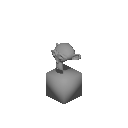

Yesterday I spent quite a bit of time working on a content pipeline in Blender. It is far from complete, but right now I have it so when I load up a blender file, it will render the entire animation from 8 (or any number) of perspectives.
It spits out a large amount of images, so the next steps will be loading up the images, cropping them, then joining them together into a large spritesheet. I'll want to save the offsets, the image positions and animations in some form of JSON file to be consumed by my engine.
I'll spend some time on that today and will also likely spend some time on fleshing out the core gameplay for a game. At this point I'm unsure of whether to take an OOP or ECS approach. For now I may punt on that decision and simply get something working.
As always, I'll try to post some code. Here's the Python file I use for rotating a scene:
# A Python script for updating the render options
# Inspired by http://clintbellanger.net/articles/isometric_tiles/
# Copyright 2021, Eric Olson
# MIT licensed
import bpy
import mathutils
import math
import os
from math import cos, sin, radians
from mathutils import Vector, Euler
cwd = os.getcwd()
FILE = bpy.path.basename(bpy.context.blend_data.filepath)
FILE_NAME = FILE.replace(".blend", "")
RENDER_WIDTH = 128
RENDER_HEIGHT = 128
ORTHO_SCALE = 10.0
AA_SAMPLES = 1.0
NUM_ROTATIONS = 8
# Set the scene coordinates
for scene in bpy.data.scenes:
scene.render.resolution_x = RENDER_WIDTH
scene.render.resolution_y = RENDER_HEIGHT
scene.render.resolution_percentage = 100
scene.render.use_border = False
scene.render.film_transparent = True
scene.render.filter_size = 0.0
scene.eevee.taa_render_samples = AA_SAMPLES
def set_camera(location, rotation):
for obj in bpy.context.scene.objects:
if obj.type == 'CAMERA':
# Convert camera to orthographic
obj.data.type = 'ORTHO'
obj.data.ortho_scale = ORTHO_SCALE
# Set the position
obj.location = location
obj.rotation_euler = rotation
def position(x, y, z):
return Vector((x, y, z))
def rotation(x, y, z):
rotation_rads = (math.radians(x), math.radians(y), math.radians(z))
return Euler(rotation_rads)
def set_lighting(rotation):
LIGHTING_NAME = "__renderer_scene_lighting__"
# remove any existing default lighting in the event we're using a previously rendered scene
for obj in bpy.context.scene.objects:
if obj.name == LIGHTING_NAME:
obj.select_set(True)
bpy.ops.object.delete()
# create light datablock, set attributes
light_data = bpy.data.lights.new(name=LIGHTING_NAME, type='SUN')
light_data.energy = 1
# create new object with our light datablock
light_object = bpy.data.objects.new(
name=LIGHTING_NAME, object_data=light_data)
# link light object
bpy.context.collection.objects.link(light_object)
# make it active
bpy.context.view_layer.objects.active = light_object
# change props
light_object.location = (0, 0, 20)
light_object.rotation_euler = rotation
# update scene, if needed
dg = bpy.context.evaluated_depsgraph_get()
dg.update()
# Triggers a render
def render(perspective):
# Trigger render
bpy.context.scene.render.filepath = f'{cwd}/output/{FILE_NAME}/{FILE_NAME}_{perspective}_'
bpy.ops.render.render(animation=True, write_still=True)
def render_isometric():
initial_rotation = 45
degs_per_rotation = 360 / NUM_ROTATIONS
# default position + rotation
init_x = 10
init_y = -10
pos = position(init_x, init_y, 10)
rot = rotation(60, 0, initial_rotation)
for rotation_idx in range(0, NUM_ROTATIONS):
# Set camera + lighting
rot_degs = degs_per_rotation * rotation_idx
rot_rads = radians(rot_degs)
# Get new position + rotation for camera
new_x = init_x * cos(rot_rads) + init_y * sin(rot_rads)
new_y = -init_x * sin(rot_rads) + init_y * cos(rot_rads)
pos = position(new_x, new_y, 10)
z_rot = initial_rotation - rot_degs
rot = rotation(60, 0, z_rot)
light_rot = rotation(40, 0, z_rot)
set_lighting(light_rot)
set_camera(pos, rot)
render(rotation_idx)
render_isometric()
The most fun (or not!) bit was rotating the camera and light. I determined that I could simply convert the problem space from 3d (x,y,z) to 2d (x,y) and then rotate that point by some angle. Doing so made it relatively easy to get the rotation working.
Lesson there is when dealing with a complex problem, attempt to reduce it to something easier. It can help.
Here's an example render:
